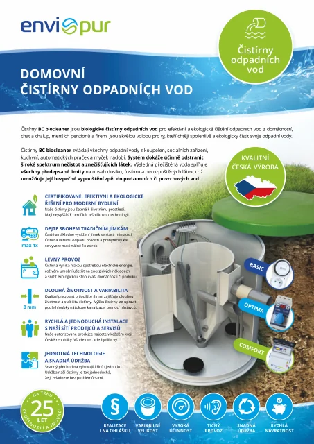

PDF
PDF Operating manual / 6.2 MB
Documents
Browse manuals, technical information and technology overviews. You can open or download each document straight away.
5 original PDF documentsPDF Operating manual / 6.2 MB
 PDF
PDF Declaration of performance / 517 kB

PDF PDF
PDF  PDF
PDF We couldn't find a document like that. Try a different name or category.
Tell us which technology you are dealing with. We will help you choose the next step.